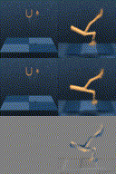
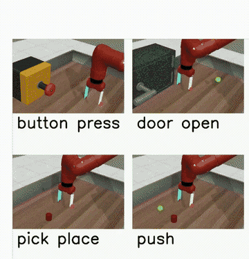

I am a member of the
Institute for Data Science Foundations at the
Hamburg University of Technology, where I research
sequential decision-making, world modeling, and causality.
I currently work as a postdoctoral researcher under the supervision of Prof. Nihat Ay on embodied intelligence
and teach mathematics, machine learning, and reinforcement learning.
I received my Dr. rer. nat. in reinforcement learning and language grounding in robotics under the supervision
of Dr. Manfred Eppe (2021–2025) and Prof. Stefan Wermter (2021–2022).
If you are looking for thesis supervision, please apply via our institute homepage.
Contact: frank.roeder [at] tuhh.de

We show that dynamics-aligned representations improve zero-shot generalization for contextual world models. DALI integrates within the Dreamer architecture to infer latent context representations from interactions, enabling adaptation to unseen environmental conditions without costly retraining.

An improved and standardized reinforcement learning benchmark suite for fair evaluation and comparison of multi-task and meta RL algorithms.
{kind=link}